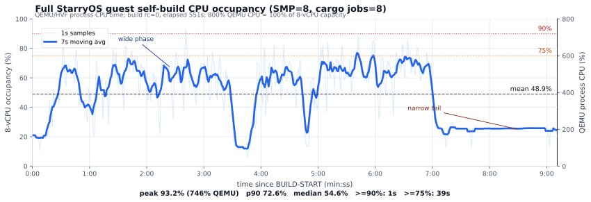
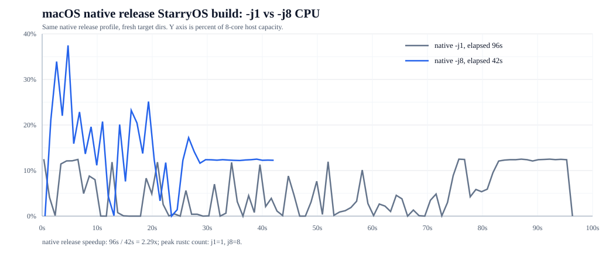
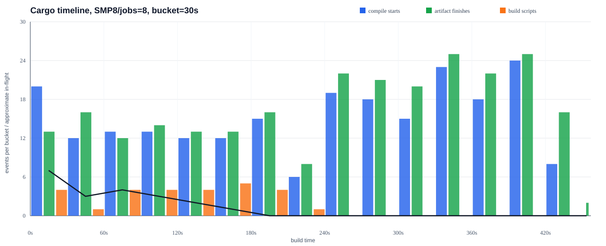
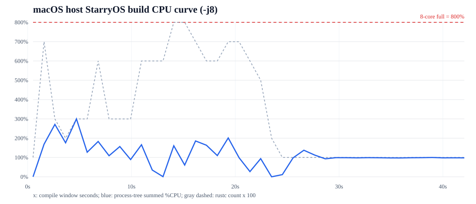
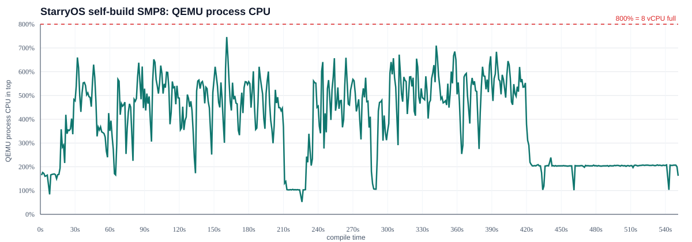

SMP8 编译时间周期与并行受限分析
目标是解释 StarryOS guest 内 `-smp 8` / `-j8` self-build 为什么没有线性并行加速。 结论不是“没有开 8 核”，而是 Cargo 依赖宽度、短任务成本、guest OS 共享路径和尾部串行共同限制了实际并行度。
551sStarryOS guest SMP8/jobs=8 full CPU sample
48.9%guest 8-vCPU normalized mean
93.2%guest 8-vCPU normalized peak
96smacOS native release -j1 PASS
42smacOS native release -j8 PASS
StarryOS guest 完整占用率-time 图

macOS native release: j1 vs j8

完整时间周期图

macOS 宿主实际编译 CPU 图

QEMU top 口径 CPU 图

旧的 24 秒截断样本只保留为采样链路验证；最终 PPT 和本报告使用完整 `551s` 曲线。
复现脚本：`过程记录/最终材料/scripts/run-hvf-starryos-smp8-hostcpu-second.sh`。
为什么并行加不起来
- Cargo DAG 有串行边界：`-j8` 只是上限，依赖没完成时下游 crate 不能开始。
- build script/proc-macro 是阶段门槛：前 180s 内 build script 密集出现，很多后续 crate 被它们解锁。
- 短任务成本高：大量短命 `rustc`、build script、helper 进程会放大 fork/exec、wait、pipe 和文件系统元数据成本。
- guest OS 共享路径成为瓶颈：调度、futex、VFS、ext4/tmpfs、页分配和 teardown 都会进入共享结构或锁路径。
- 尾部变窄：`420-450s` 只有 8 个新 start，`450-457s` 没有新 start，只剩最终 artifact。
- 单个 rustc 不是 8 核模型：前端、宏展开、metadata、emit/link 等阶段有串行或有限并行部分。
- macOS 对照说明 guest 开销被放大：native host `-j8` 也不长期打满 8 核，但能在 42s 完成；guest 的 457s 主要来自进程、同步、VFS、文件系统、内存和虚拟化路径成本。
复现命令
自动打开两个 macOS Terminal，一个跑编译，一个采 `top -pid`：
cd /Users/txc/code/Auto-OS
SOURCE_TMPFS=1 bash /Users/txc/code/Auto-OS/过程记录/最终材料/scripts/start-smp8-top-two-terminal.sh手工采样已有 QEMU PID：
pid="$(pgrep -n -f 'qemu-system-aarch64.*starryos-hvf-smp8-hvfopt-wake-local')"
bash /Users/txc/code/Auto-OS/过程记录/最终材料/scripts/monitor-qemu-top-cpu.sh \
"$pid" \
/Users/txc/code/Auto-OS/过程记录/最终材料/final/cpu-util/qemu-top-$(date +%Y%m%dT%H%M%S).csv \
1